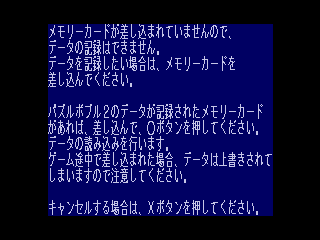
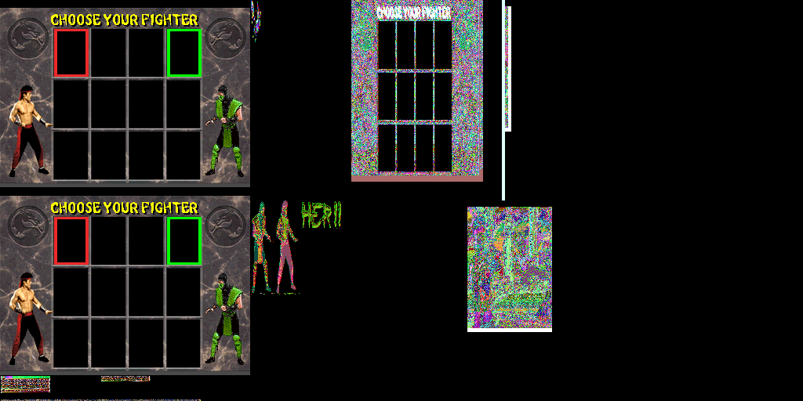
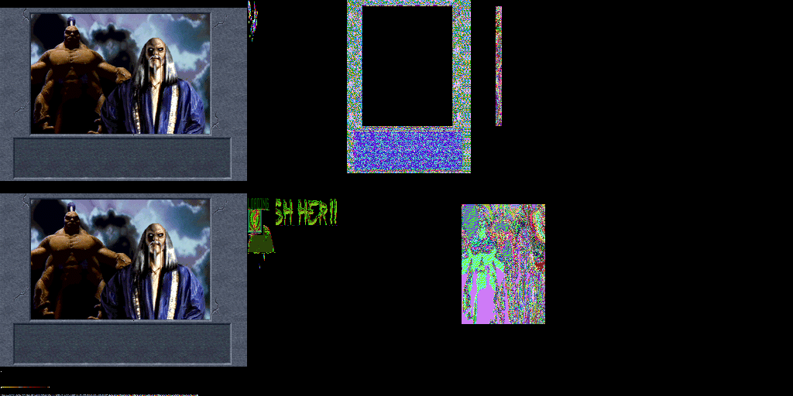

Games
(mostly?) fixes for game issues
Puzzle Bobble 2
Controller Input Issues
 
Directional controls (up/down) on this screen might not work (even though other buttons work). This happens if SIO0 RX is sent for both ports at the same time (bit 13).
0 TX Enable (TXEN) (0=Disable, 1=Enable)
1 DTR Output Level (0=Off, 1=On)
2 RX Enable (RXEN) (SIO1: 0=Disable, 1=Enable) ;Disable also clears RXFIFO
(SIO0: 0=only receive when /CS low, 1=force receiving single byte)
3 SIO1 TX Output Level (0=Normal, 1=Inverted, during Inactivity & Stop bits)
4 Acknowledge (0=No change, 1=Reset SIO_STAT.Bits 3,4,5,9) (W)
5 SIO1 RTS Output Level (0=Off, 1=On)
6 Reset (0=No change, 1=Reset most registers to zero) (W)
7 SIO1 unknown? (read/write-able when FACTOR non-zero) (otherwise always zero)
8-9 RX Interrupt Mode (0..3 = IRQ when RX FIFO contains 1,2,4,8 bytes)
10 TX Interrupt Enable (0=Disable, 1=Enable) ;when SIO_STAT.0-or-2 ;Ready
11 RX Interrupt Enable (0=Disable, 1=Enable) ;when N bytes in RX FIFO
12 DSR Interrupt Enable (0=Disable, 1=Enable) ;when SIO_STAT.7 ;DSR high or /ACK low
13 SIO0 port select (0=port 1, 1=port 2) (/CS pulled low when bit 1 set)
14-15 Not used (always zero)
Based on bit 13 only respond for the selected port. In my case I ignore port 2 (returning 0xFF denotes absence).
match tx_byte {
0x01 => {
if self.control.port_number() == 2 {
// If Port 2 is selected, no controller is present
tracing::trace!(
target: "psx_core::sio",
tx = format!("{:02X}", tx_byte),
"Port 2 selected - no device"
);
return 0xFF;
}
self.active_device = ActiveDevice::Controller;
}
0x81 => {
self.active_device = ActiveDevice::MemoryCard;
}
_ => {}
}
When SIO0_CTRL is written, I also check whether the port number changed to 2 and reset the state machine if necessary:
if matches!(self.active_device, ActiveDevice::None | ActiveDevice::Controller)
&& self.control.port_number() == 2
{
self.reset_devices();
}
Honorary mention: Chicho
Mortal Kombat II
Fragmented Graphics

Polygon commands must propagate their texpage to the global texpage.
// Update global texpage state from polygon's embedded texpage
// Texpage is in uvs[1] upper 16 bits (same location as for triangles/quads)
if uvs.len() > 1 {
let texpage = ((uvs[1] >> 16) & 0xFFFF) as u16;
// Extract texpage components (bits 0-8, 11 update global state)
let texture_page_x_base = (texpage & 0xF) as u32;
let texture_page_y_base_1 = ((texpage >> 4) & 0x1) != 0;
let texture_page_colors = ((texpage >> 7) & 0x3) as u32;
let texture_page_y_base_2 = ((texpage >> 11) & 0x1) != 0;
// Update global GPU state (same as GP0(E1h) command)
self.gp.gp1_status.set_texture_page_x_base(texture_page_x_base);
self.gp.gp1_status.set_texture_page_y_base_1(texture_page_y_base_1);
self.gp.gp1_status.set_texture_page_colors(texture_page_colors);
self.gp.gp1_status.set_texture_page_y_base_2(texture_page_y_base_2);
}
Honorary mention: Lycoder
Missing Graphics
  
Missing VRAM to VRAM Blit command, something along the lines of:
let src_x = (parsed_cmd.data[0] & 0xFFFF) as u16;
let src_y = ((parsed_cmd.data[0] >> 16) & 0xFFFF) as u16;
let dst_x = (parsed_cmd.data[1] & 0xFFFF) as u16;
let dst_y = ((parsed_cmd.data[1] >> 16) & 0xFFFF) as u16;
let width = (parsed_cmd.data[2] & 0xFFFF) as usize;
let height = ((parsed_cmd.data[2] >> 16) & 0xFFFF) as usize;
// Copy rectangle from source to destination in VRAM
// Handle overlapping regions by copying to a temporary buffer first
let mut temp_buffer: Vec<u16> = Vec::with_capacity(width * height);
// Read from source
for row in 0..height {
for col in 0..width {
let vram_x = (src_x as usize + col) & (VRAM_WIDTH - 1);
let vram_y = (src_y as usize + row) & (VRAM_HEIGHT - 1);
let vram_idx = (vram_y * VRAM_WIDTH + vram_x) * 2;
let byte0 = self.gp.vram[vram_idx];
let byte1 = self.gp.vram[vram_idx + 1];
let pixel = u16::from_le_bytes([byte0, byte1]);
temp_buffer.push(pixel);
}
}
// Write to destination
let mut pixel_idx = 0;
for row in 0..height {
for col in 0..width {
let vram_x = (dst_x as usize + col) & (VRAM_WIDTH - 1);
let vram_y = (dst_y as usize + row) & (VRAM_HEIGHT - 1);
let vram_idx = (vram_y * VRAM_WIDTH + vram_x) * 2;
let bytes = temp_buffer[pixel_idx].to_le_bytes();
self.gp.vram[vram_idx] = bytes[0];
self.gp.vram[vram_idx + 1] = bytes[1];
pixel_idx += 1;
}
}